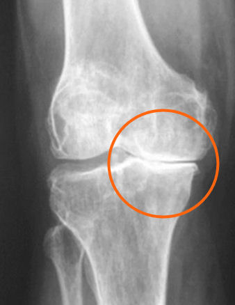
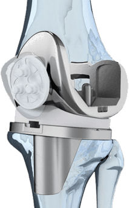
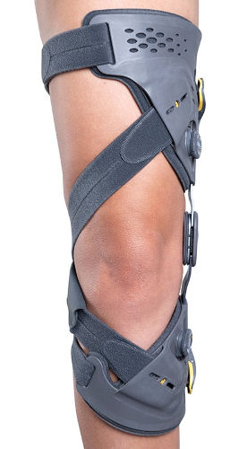
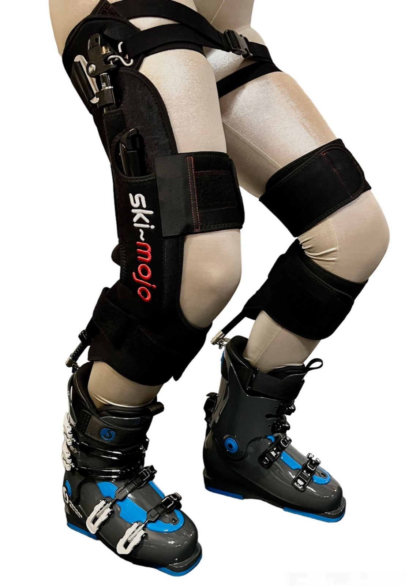
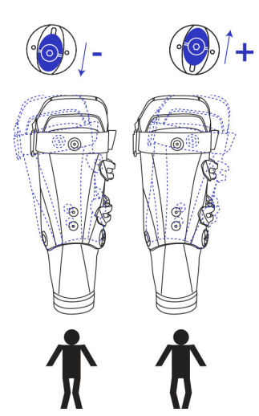

Waarom een versleten knie (gonartrose) en skiën geen fijne combinatie is.
Mijn eerste skileraar zei het al: "Markus-Paulus: Vergiss nie, Schifahren ist Kniefahren" dat heb ik altijd onthouden. Tuurlijk, het waren andere tijden. De ski's waren minimaal 2 meter 10 lang en je Dachstein of Koflach skischoenen waren van beton. Maar in wezen is er niks veranderd. Knieën zijn nog steeds heel belangrijk in het moderne skiën.
Veel van onze klanten geven aan een versleten knie te hebben en daarom iets rustiger aan te doen. Dat is niet zo vreemd als je je bedenkt dat in Nederland 2,6% van de mensen lijdt aan gonartrose1.
Vanzelfsprekend verwacht je dit voornamelijk bij de ietwat oudere klanten. Maar ook jongere mensen kunnen last van knieartrose hebben. In dit laatste geval meestal veroorzaakt door een blessure of trauma.
Maar gonartrose, zoals de medische aanduiding luidt, kan ook het gevolg zijn van reuma.
Wat de oorzaak ook is: knieartrose en skiën blijft een ingewikkelde combinatie….
Wat is slijtage van de knie en artrose van het kniegewricht?
In grote lijnen kan men zeggen dat het wanneer het kraakbeen in het kniegewricht is aangetast door slijtage, er sprake is van knie- of gonartrose. Maar er is vaak meer aan de hand. Zo kan de meniscus zijn aangetast wat tot gevolg heeft dat de schokabsorptie verminderd is in de knie. Dit heeft natuurlijk rechtstreeks gevolgen voor het skiën. Maar er kan ook sprake zijn van de vorming van kleine botpuntjes (zogenaamde osteofyten) in het kniegewricht.
Als de schokabsorptie is verminderd en in de knie onregelmatigheden zitten, in combinatie met verslechterd kraakbeen, dan kunt u zich voorstellen waarom u pijn heeft met skiën.
Wanneer de knieartrose al langer bestaat kan zich ook nog het volgende voordoen: het bot onder de beschadigde kraakbeenlaag kan zijn aangetast. De zenuwuiteinden kunnen komen bloot te liggen waardoor pijn kan optreden. Als gevolg hiervan zwelt ook het slijmvlies van de knie op en raakt dit ontstoken.
De combinatie van pijn, stijfheid en functieverlies (minder buigzaam of de mogelijkheid het been te strekken) zijn natuurlijk geen dingen die lekker skiën bevorderen.
Behandeling van knieartrose

Kunstknie of prothese
Ondanks dat het verlies van kraakbeen, vorming van osteofyten en aantasting van het bot onomkeerbaar zijn, wil dat niet zeggen dat knieartrose niet te behandelen is. Deze behandelingen (oefentherapie) zijn gericht op het versterken van de spieren en stabiliteit van de knie maar ook pijnreductie met bijvoorbeeld een steunzool of een kniebrace kan een oplossing zijn.
In het uiterste geval kunt u kiezen voor een gehele of gedeeltelijke knieprothese. Er zijn tal van voorbeelden van mensen die na het krijgen van een kunstknie weer pijnvrij kunnen skiën!
In het skiën helpt het vooral om de keuze van de piste aan te passen. Moeilijke zwarte pisten, door het bos rossen of in het park springen, zijn dingen die u beter beter kunt vermijden. Maar ook de verspoorde pisten aan het einde van de dag, de zogenaamde 'Slush', kunnen een ware martelgang zijn.
Ikzelf kies er 's ochtends altijd voor, wanneer het 'corduroy' nog bevroren is, om eerst even koffie te drinken. De anders zo mooie piste kan bij bevriezing voor de knieën een behoorlijke pijnlijke ervaring zijn.
Oefentherapie, een onderschatte oplossing
Onder oefentherapie wordt verstaan: fysiotherapeutische behandeling die gericht is op het verbeteren van lichamelijke functies en het verminderen van klachten door middel van specifieke oefeningen en bewegingstherapie. Uit onderzoek blijkt dat vooral krachttraining een zeer positieve invloed heeft3.
Hoewel maar 4% van de mensen met knieartrose door de huisarts wordt verwezen naar de fysiotherapeut2 , is uit onderzoek gebleken dat oefentherapie zorgt voor 12% pijnvermindering en 10% verbetering van functioneren3.
Ik kan uit persoonlijke ervaring spreken: goede krachttraining onder toezicht van een fysiotherapeut kan de pijnklachten in de knie tijdens het skiën aanzienlijk verminderen.

Valgiserende brace
Kniebrace maar dan wel de goede!
Een brace voor de knie kan een goede bijdrage leveren aan de pijnreductie. Maar dan wel de goede brace. Zo moet je kiezen voor een zogenaamde valgiserende brace wanneer de slijtage aan de knie zich aan de binnenkant (mediale zijde) bevindt. Zo wordt de drukt op de binnenzijde van de knie verminderd. Onderzoek uit 2011 laat zien dat er met een valgiserende brace niet alleen pijn vermindering is maar ook een verbeterde functie van de knie4.
De Ski-Mojo kan uitkomst bieden

Ski-Mojo
De Ski-Mojo is een exoskelet, specifiek ontworpen om kniebelasting tijdens het skiën te verminderen. Het bestaat uit een tailleband en twee verbindingsstangen bevestigd aan de benen en skischoenen van de skiër.
Het idee achter de Ski-Mojo is dat het veersysteem gebruikt wordt om het gewicht van de skiër te ondersteunen en te verdelen, waardoor de belasting op de knieën wordt verminderd. Er is een krachtreductie van wel 30% mogelijk. U kunt zich voorstellen dat dit bij behoorlijke knieartrose enorm ontlastend werkt. De Ski-Mojo is echter geen skibrace! Hij kan echter wel in combinatie met een skibrace worden gedragen. Meer over de Ski-Mojo leest u hier.
Wat kan een bootfitter voor u betekenen bij knieartrose?

Canting van het onderbeen
Zoals ik hierboven al schreef, heeft de stand van het onderbeen invloed op de belasting van de knie. Wanneer bijvoorbeeld de binnenzijde (mediale zijde) van de knie is versleten en dus pijnlijk is, dan kan de bootfitter met behulp van canting, of een steunzool in de skischoen, de stand van het onderbeen positief beïnvloeden. Heeft u last van (een) versleten knie(ën) laat het dan weten bij het assessment. Want ook als u denkt dat er niets aan te doen is, kunnen alle kleine beetjes helpen…
Referenties
- Nivel Zorgregistraties
- Barten DJ, Swinkels LC, Dorsman SA, Dekker J, Veenhof C, de Bakker DH. Treatment of hip/knee osteoarthritis in Dutch general practice and physical therapy practice: an observational study. BMC Fam Pract 2015 Jun 27; 16: 75
- Fransen M, McConnell S, Harmer AR, van der Esch M, Simic M, Bennell KL. Exercise for osteoarthritis of the knee. Cochrane Database Syst Rev 2015 Jan 9:1 CD004376
- Reeves ND, Bowling FL. Conservative biomechanical strategies for knee osteoarthritis. Nat Rev Rheumatol 2011 7(2): 113-22 6